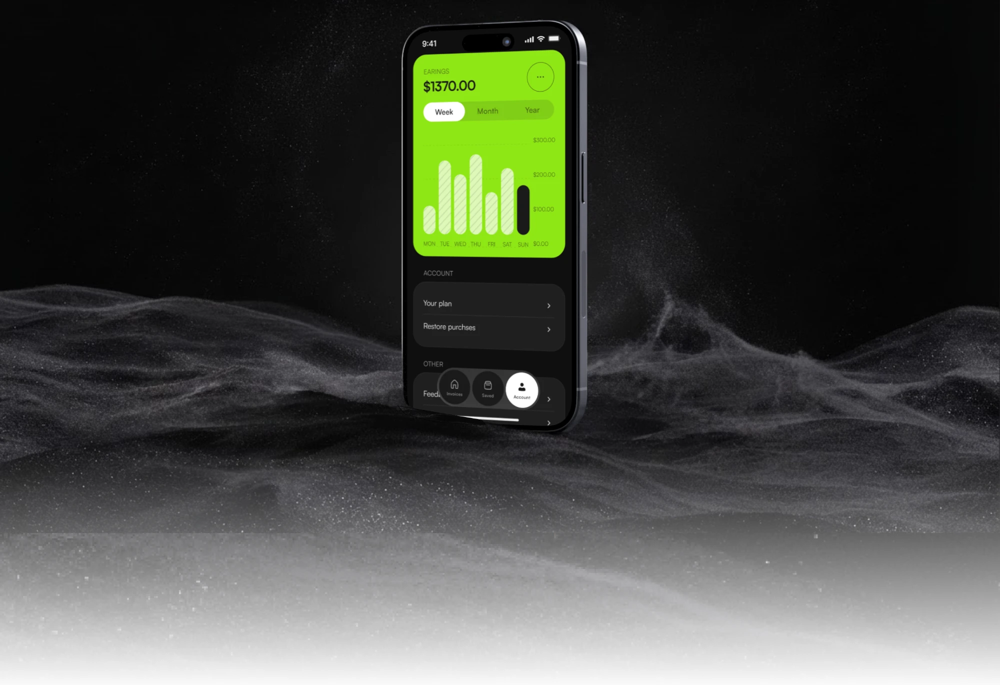
Invoicer · 2024 · Fintech
Invoicing in three steps
A one-line brief became a focused iOS MVP for freelancers and small businesses: client, items, payment. The client approved the design and handed it to a developer together with a full UI kit.
Quick facts
- Role
- UX/UI designer, sole designer on the project
- Format
- freelance commission
- Platform
- iOS
- Duration
- 5 weeks
Context
Invoicer is a mobile invoicing app for freelancers and small businesses, in the fintech space. I took the project on as a freelance commission and worked as the sole designer, from a one-line brief to a developer handoff. In five weeks I shaped the idea into an iOS MVP, defined its flow and structure, designed the screens and built the UI kit that the client's developer picked up.
Problem
Small businesses and freelancers without an accountant issue their own invoices. Each invoice costs time in three places: finding the right template, working out which fields to replace, and typing a returning customer's details again. A sloppy invoice costs credibility with the client.
“Why do I need to enter the same information repeatedly?”
“I don't want to lose track of my payments or clients.”
Research
I studied reviews of established invoicing apps and discussions on social media. Three patterns repeated:
- A simple task sits behind many options and pages.
- Repeated data entry stays part of the routine.
- Multi-currency and drafts stay thin.
These patterns became three design principles: one focus per screen, enter data once, keep work in progress safe.

Scoping
The client arrived with several ideas and no shared picture of the finished product. I put the brief and the research side by side, grouped every proposed feature by the user problem it solves, and cut the set down to an MVP: create an invoice, reuse saved clients and items, and put payment details on the page. The client approved that scope and the design that grew from it.
Moved to a later release: recurring invoices, payment reminders, time tracking, payment-gateway integration.
Subscription pricing ($5.99 monthly, $59.99 yearly) came from the research and was agreed with the client.

Key decisions
Decision 1 — Three steps in place of one long form
Creating an invoice is split into Client, Items and Payment, with a "Step 2 of 3" header on each screen. The Items step pins Subtotal, Tax and Total above the primary button, so the amount stays visible while items are added.
Alternative: one scrolling form with every field visible.
Trade-off: extra screen transitions in return for one decision at a time on a small screen.
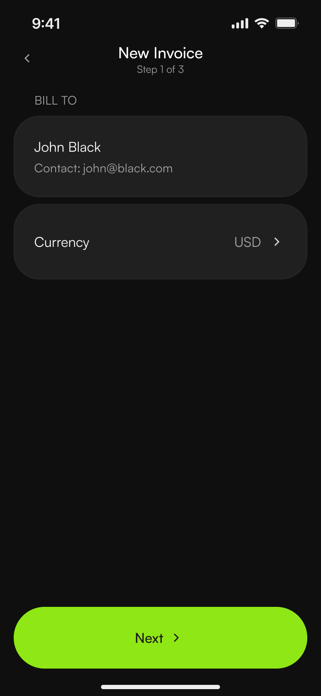
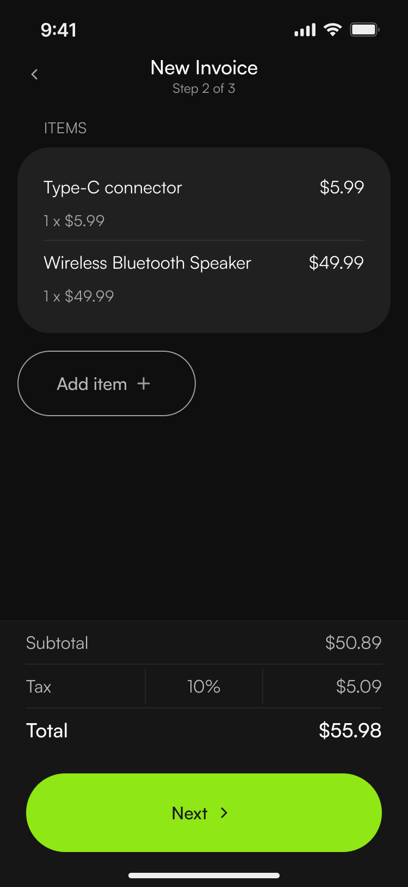
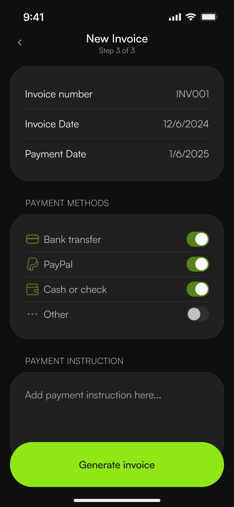
Decision 2 — "Saved" as a reusable library
Clients and items live in their own tab. The invoice flow picks from that library, or creates a new entry inline through modals. This answers the "enter it once" pain directly.
Alternative: a client field typed fresh in every invoice.
Trade-off: one extra tab in the navigation.
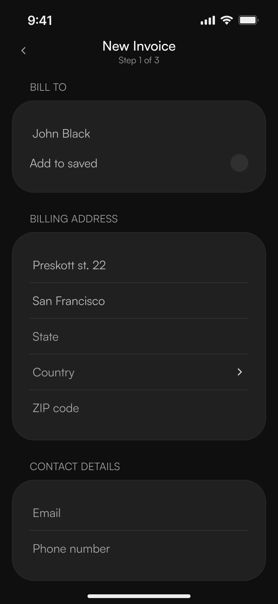
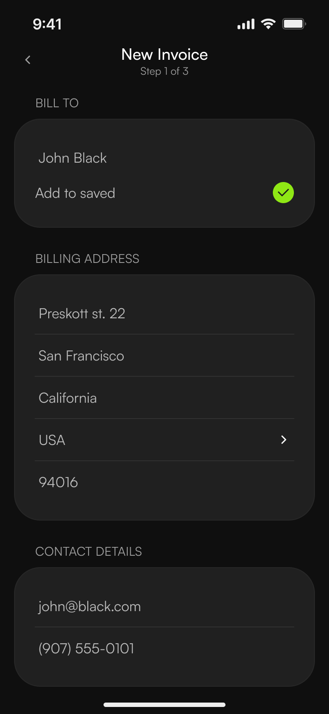
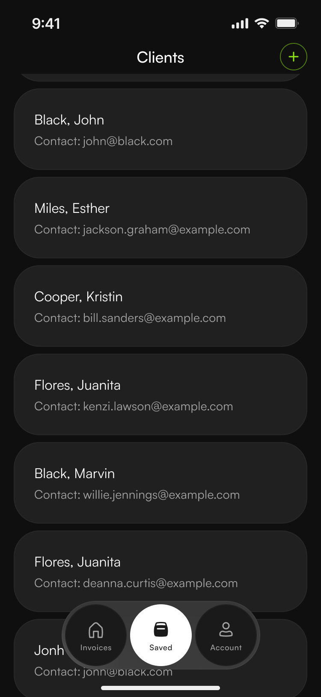
Decision 3 — Three tabs: Invoices, Saved, Account
Earnings live under Account, so the home tab stays on the invoice list and the create action. The first-run empty state ("No invoices yet") leads straight to creation.
Alternative: a dashboard as the home screen.
Trade-off: the earnings overview sits one tap away, under Account.
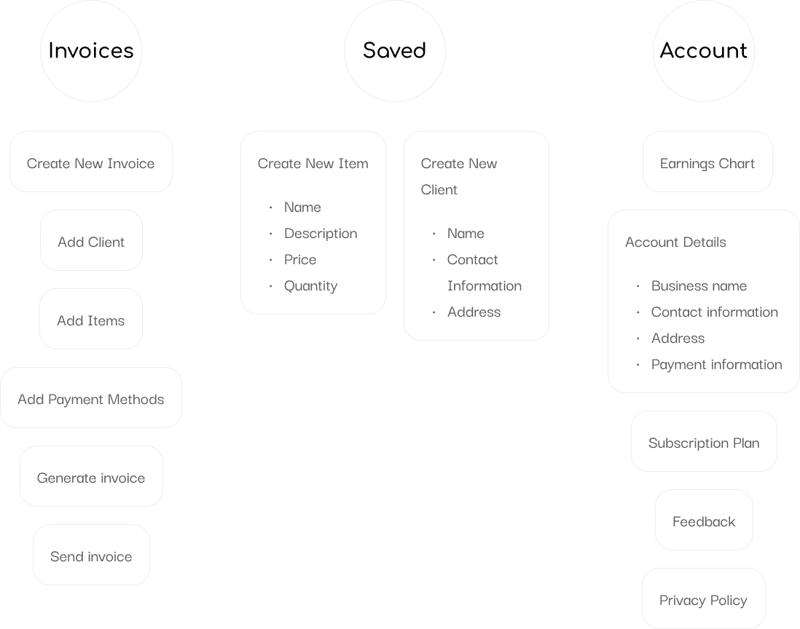
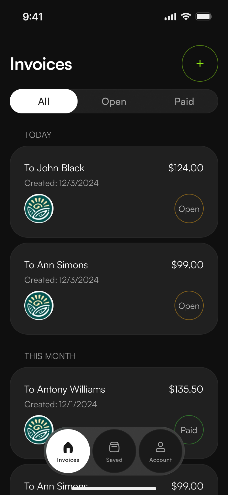
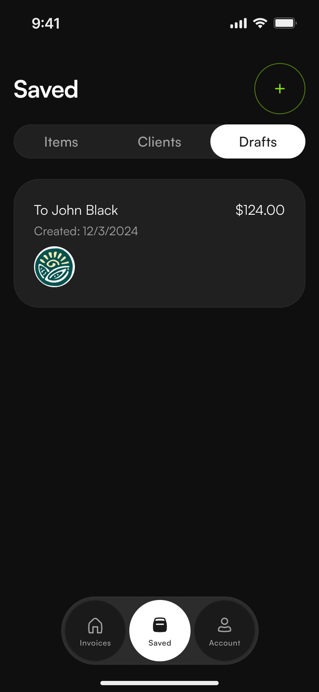
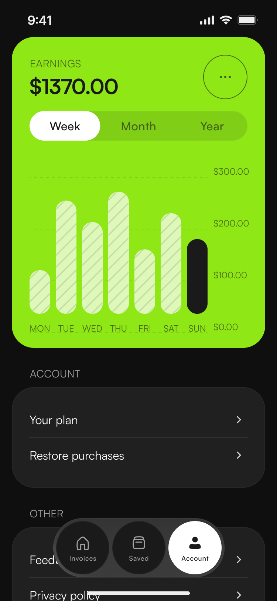
Solution
Invoicer covers the invoicing routine in five areas.
Invoices. The home tab lists every invoice as a card with client, date, amount and status, filtered by All, Open and Paid. A finished invoice opens inside the app with its number, date, total and status, and offers actions to mark it as paid, share or edit it. The same invoice also exists as a document preview that can be printed or saved as a PDF.
Creating an invoice. Three steps. A returning client takes one selection from a searchable list. A new client takes one form with billing address and contact details, with the option to add it to Saved. The currency comes from a searchable list. Items follow the same pattern: pick from the saved list or create inline, add as many as needed, choose the tax rate and watch subtotal, tax and total update. Step 3 opens with the invoice number and date filled in, which leaves the payment date, the payment methods (bank transfer, PayPal, cash or check, other) and a payment instruction.
Saved. One tab for items, clients and drafts, switched by a segmented control, with new entries created on the spot.
Account. Business, personal and address details, together with payment details for bank transfer and PayPal, are entered once and reused in every invoice. Earnings appear as a chart by week, month and year.
Plan. A subscription screen with monthly and yearly options and restore purchases.
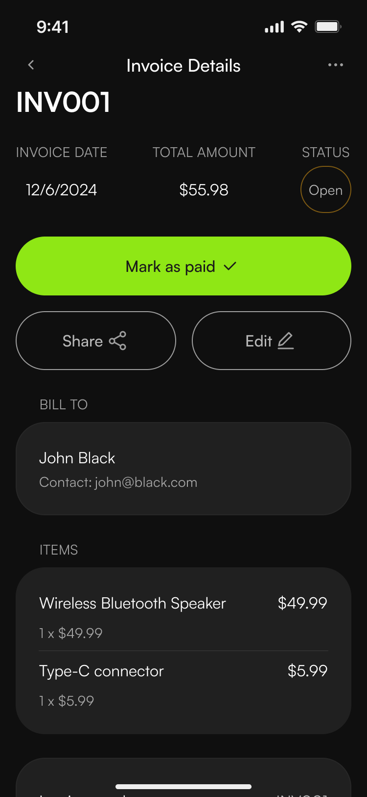
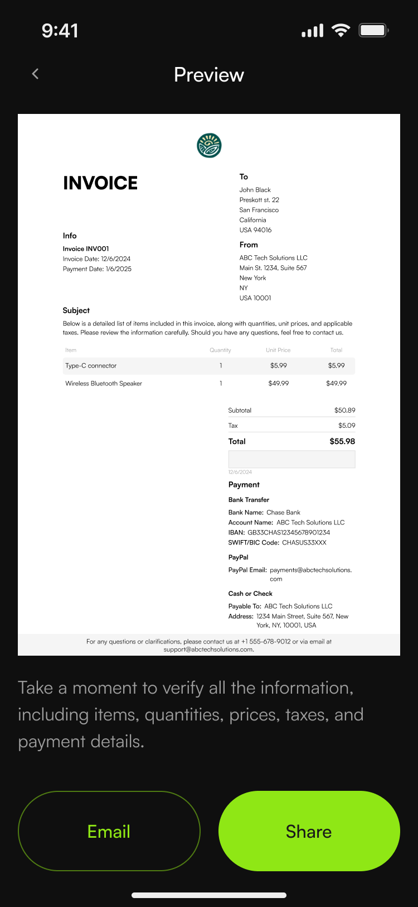
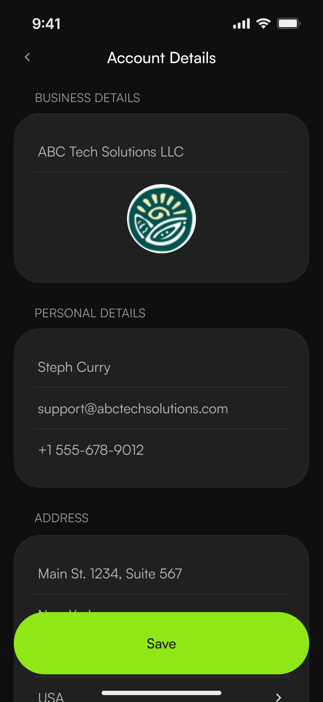
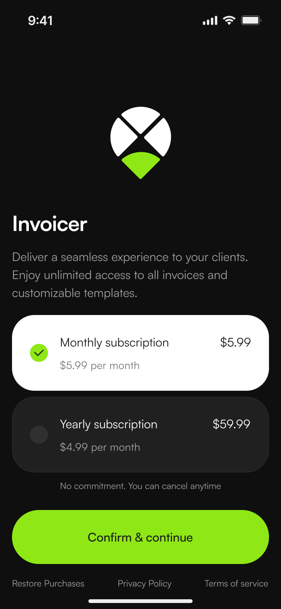
Design system & handoff
The handoff was a complete UI kit, built so a developer can pick it up without a meeting:
- Color: a palette with the brand Lime #8FE715 and tokens.
- Typography: Satoshi Variable with styles and usage guidance.
- Spacing and radius scales.
- 27 component types with states (default, pressed, disabled, error) for Text Field, Button and Toggle.
- Icons: Basil pack by Craftwork.
- Specification page with sizes for key screens.
- Behavior notes: field validation, keyboard, date picker, empty states.


Color and typography.
Outcome
The client reviewed and approved the scope and the design, then passed the handoff to their developer.